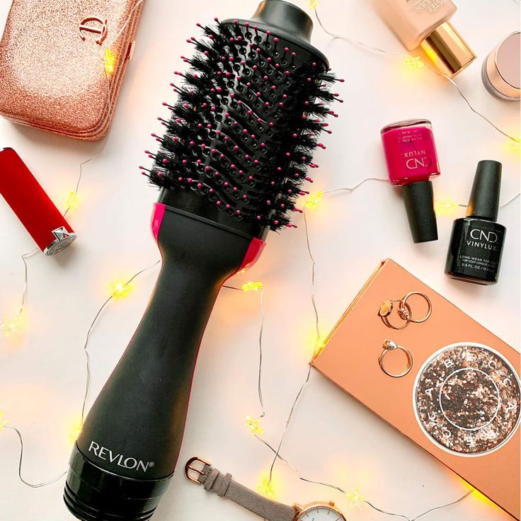
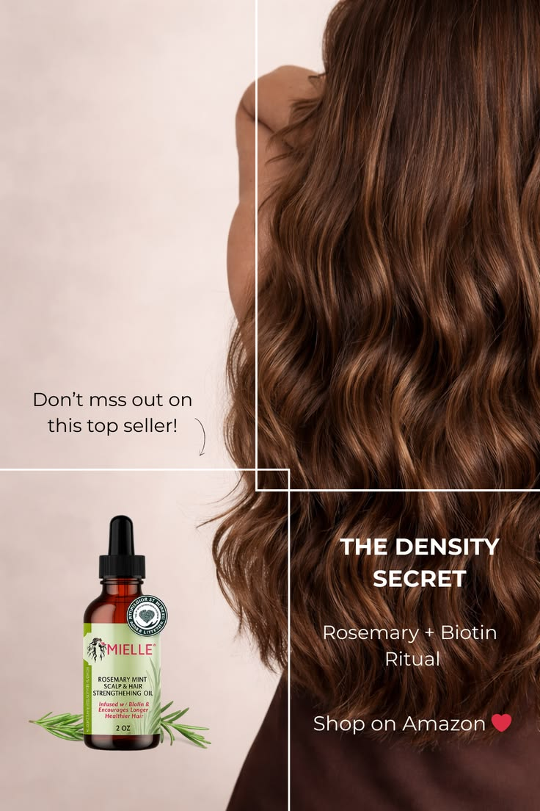
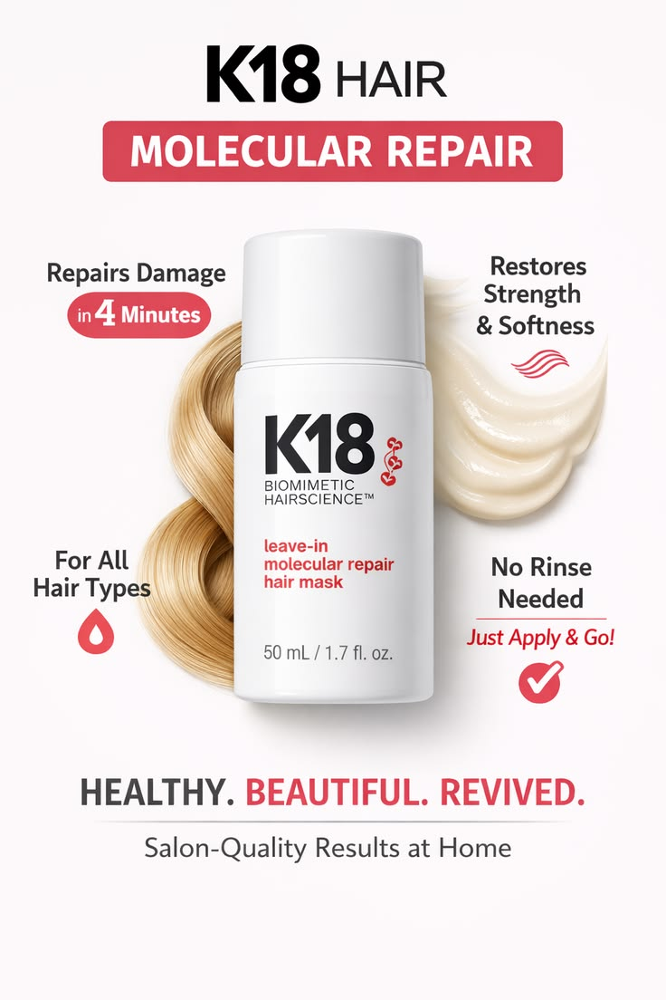
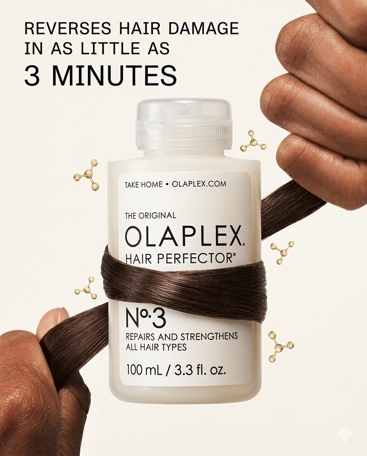
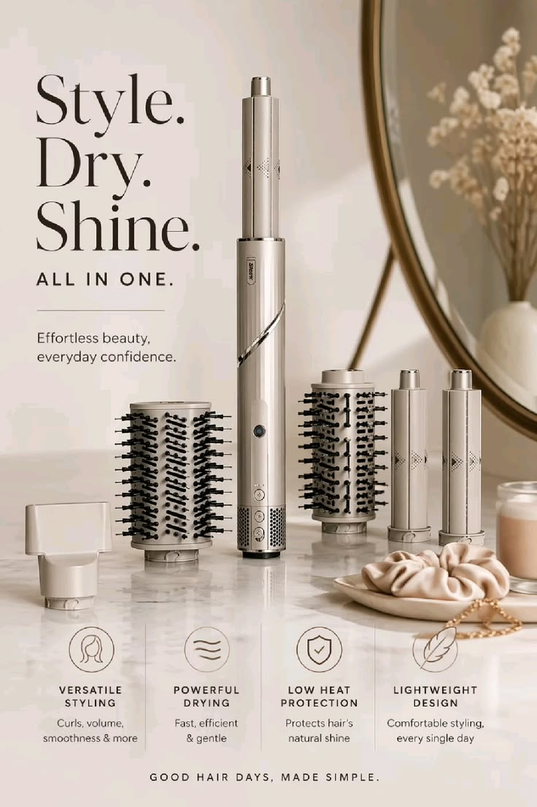
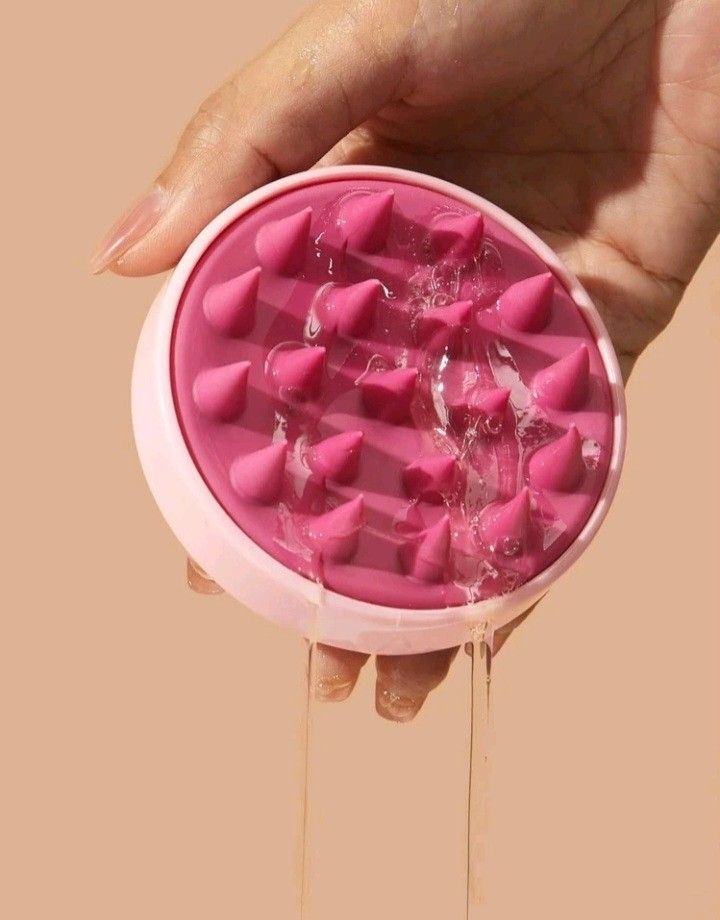
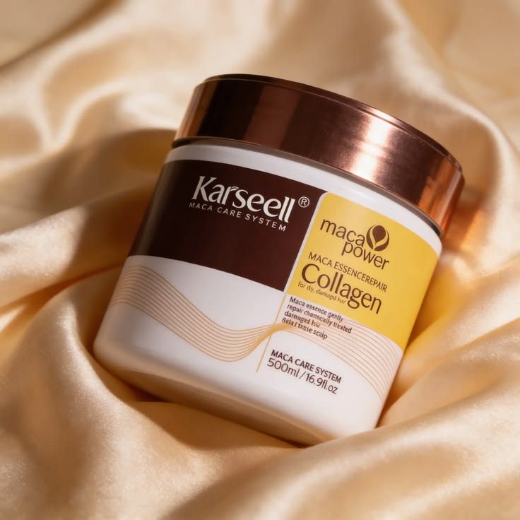
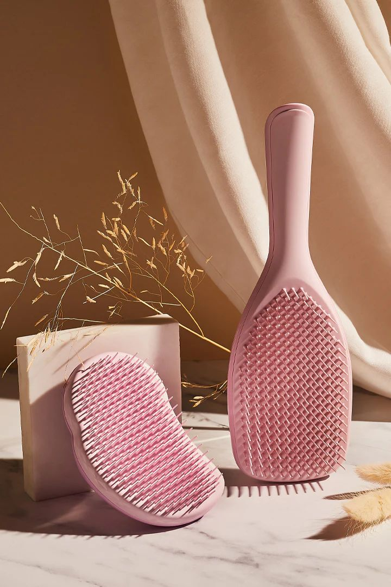
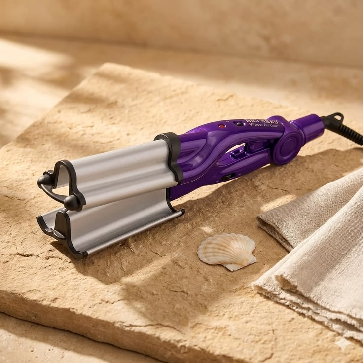

These hair products completely changed people’s routines — and honestly, once you try them, there’s no going back.

This is the hair tool people buy after getting tired of spending forever styling their hair. It dries, smooths, and adds salon-level volume at the same time, making your hair look professionally done in minutes. Once you use this, regular blow dryers feel completely outdated.
It saves time, reduces heat exposure, and gives that expensive blowout look without needing multiple tools cluttering your bathroom counter.
People love how fast and effortless it makes styling. It’s one of those purchases that instantly becomes part of your everyday routine.
View On Amazon
Dry scalp, breakage, weak edges — this viral oil became famous for a reason. It leaves your scalp refreshed while making hair feel healthier, softer, and more nourished over time.
A few drops instantly make your hair routine feel luxurious while helping damaged hair look alive again.
People swear their hair feels stronger, softer, and shinier after adding this into their routine.
View On Amazon
Bleach, heat, coloring, and constant styling can completely destroy hair — and this is the product people use when they want their hair to actually feel healthy again.
It works in just minutes and leaves hair feeling smoother, softer, and dramatically less damaged.
People say this completely changed their hair after bleach damage and years of heat styling.
View On Amazon
If your hair feels weak, rough, tangled, or impossible to manage, this treatment helps bring softness and strength back fast.
It helps damaged hair feel smoother and healthier after just a few uses.
People keep rebuying this because their hair feels healthier and easier to manage after using it consistently.
View On Amazon
This luxury styling system exploded online because it gives that expensive, glossy salon-hair look from home.
It replaces multiple styling tools while making your hair look polished, smooth, and professionally styled.
People love getting salon-looking hair without constantly booking expensive appointments.
View On AmazonWaking up with soft curls without frying your hair every morning sounds impossible — until you try this.
You get beautiful overnight curls while protecting your hair from heat damage.
People love waking up already looking styled with almost zero effort.
View On Amazon
This tiny tool makes your scalp feel unbelievably clean and refreshed while turning regular shampoo days into a mini spa experience.
It helps your scalp feel cleaner while making hair washing feel relaxing instead of rushed.
People become obsessed with how satisfying and relaxing it feels during every wash.
View On Amazon
If your hair feels dry, rough, or impossible to tame, this collagen treatment leaves it feeling silky, smooth, and deeply nourished.
It instantly makes damaged hair feel softer and more manageable after one use.
People love how silky and healthy their hair feels after using it.
View On Amazon
Brushing wet hair usually means breakage and pain — but this brush glides through knots without pulling or damaging your hair.
It makes detangling faster, easier, and way less painful.
People are shocked at how easily this brush gets through tangles without ripping hair out.
View On Amazon
Beachy waves, massive volume, and glossy hair in minutes — this viral waver creates the effortless “vacation hair” look people constantly save on Pinterest.
It gives dramatic waves that actually last while helping reduce frizz.
People love how quickly it transforms flat hair into big, voluminous waves.
View On Amazon